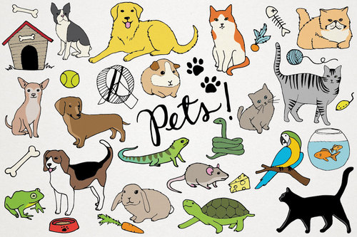

Animale de companie
Animalele de companie sunt animalele domestice pe care omul le întreține și le îngrijește în preajma căminului pentru a comunica și pentru a primi emoții pozitive. De obicei manifestă o atitudine tolerantă față de om. Prin aceasta se deosebesc de animalele de gospodărie, întreținute în mod special pentru munca fizică depusă și bunurile alimentare și materiale furnizate.
Cele mai cunoscute animale de companie sunt câinii și pisicile. O răspândire mai modestă o au păsările (de obicei papagali, canari, porumbei), rozătoarele și peștii. Se consideră animale de companie exotice reptilele (broaște țestoase terestre, șopârle, șerpi) și unele specii de arahnide.
Unele animale de gospodărie pot fi considerate animale de companie. Printre acestea se numără calul, măgarul, și porcul.
Animalele de companie au devenit parte din civilizația umană de ceva timp. În special, câinii în epoca de piatră au devenit tovarăși a vânătorilor. Pisica (conform datelor disponibile) a fost animal domestic acum aproximativ 9500 de ani. În același timp, calul și cămila erau domesticite.
Cele mai vechi rase de câini care au fost crescuți ca animale de companie includ 14 rase. De exemplu, potrivit studiilor genetice, vârsta evoluționistă a Pechinez este de aproximativ 2000 de ani, rămășițele Akita Inu datează de la aproximativ două mii î.Hr. e., iar imaginile lui Saluki datează din jurul anului 3500 î.Hr. e.
Efecte asupra sănătății animalelor de companie
Menținerea animalelor ca animale de companie poate fi dăunătoare pentru sănătatea lor dacă nu sunt îndeplinite anumite cerințe. O problemă importantă este alimentația necorespunzătoare, care poate produce efecte clinice. Consumul de ciocolată sau struguri de către câini, de exemplu, se poate dovedi fatal.
Emoțiile, în special câinii și pisicile din societățile industrializate, sunt, de asemenea, extrem de sensibile la obezitate. Animalele supraponderale s-au dovedit a fi la un risc mai mare de a dezvolta diabetul, probleme hepatice, dureri articulare, insuficiență renală și cancer. Lipsa exercițiilor fizice și a hranei calorice sunt considerate a fi principalii contribuitori la obezitatea animalelor de companie.
Beneficii ale animalelelor de companie
Animalele de companie rămân una dintre marile bucurii ale vieţii. La sosirea acasă, după o zi stresantă la locul de muncă, ştii că te aşteaptă în pragul uşii un prieten cu patru picioare. El este cel care te învaţă compasiunea şi iubirea necondiţionată.Beneficiile nu se termină însă aici, pentru că animalul de companie poate face minuni şi la capitolul sănătate.
- Risc mai mic de alergii
- Reducerea anxietăţii şi stresului
- Inimă sănătoasă
- Relaţii puternice şi abilităţi sociale
- Sănătate mintală
- Somn de calitate